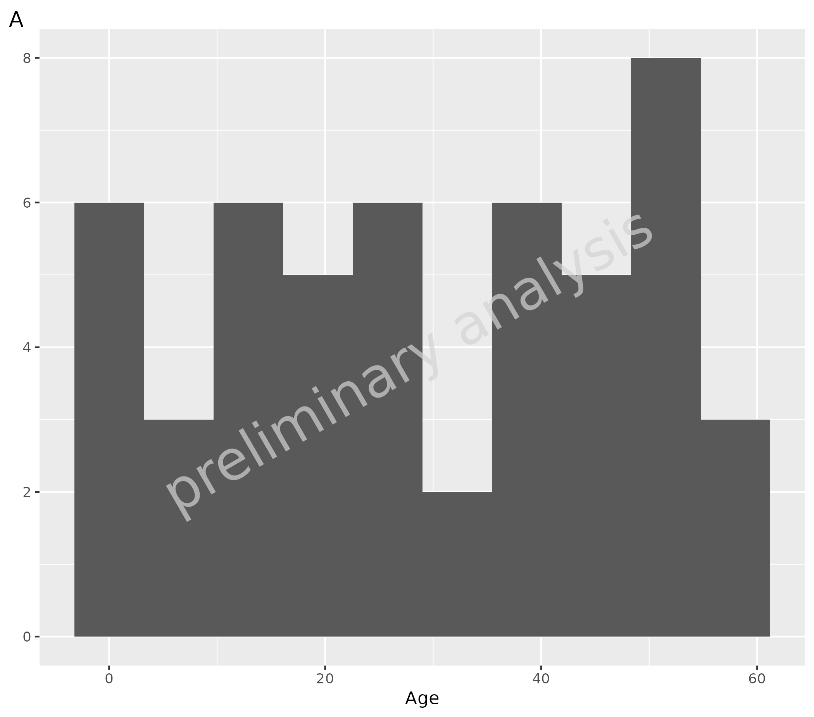
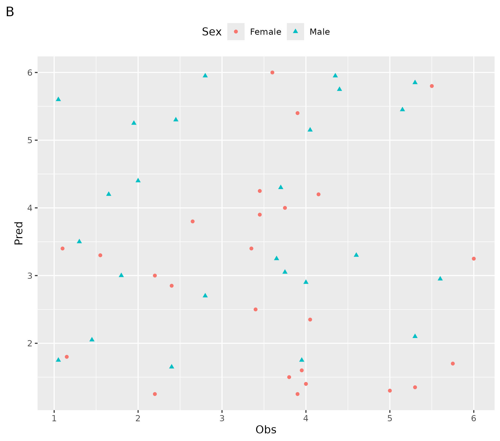
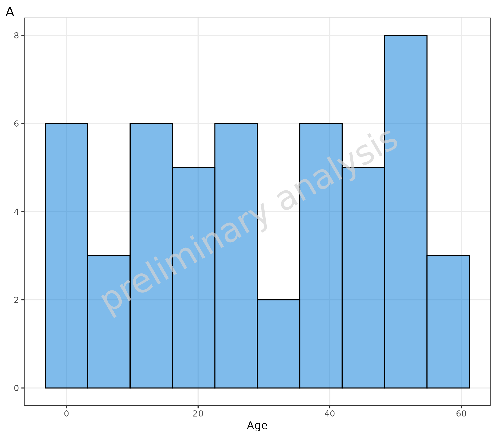
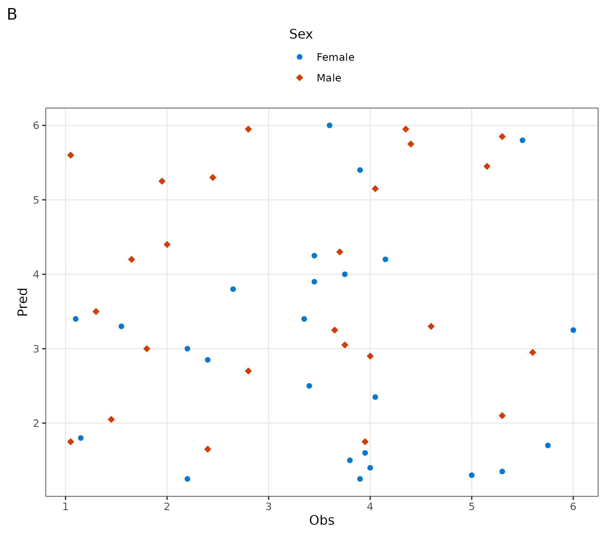
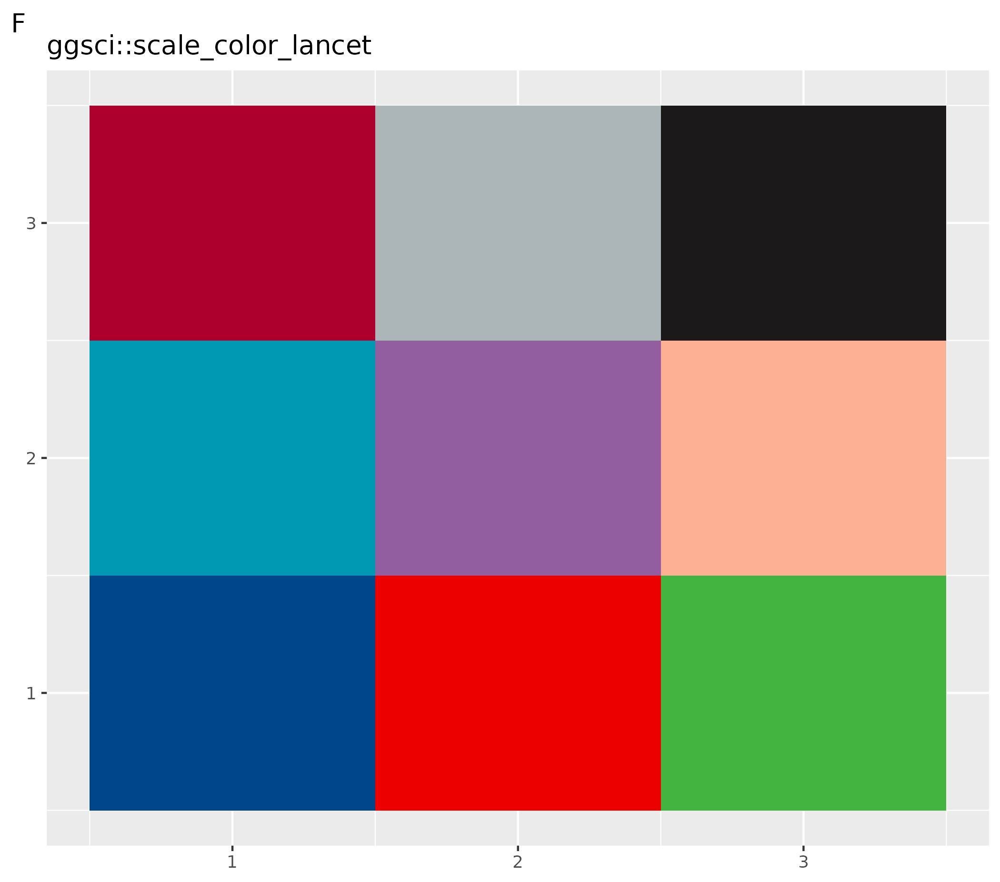
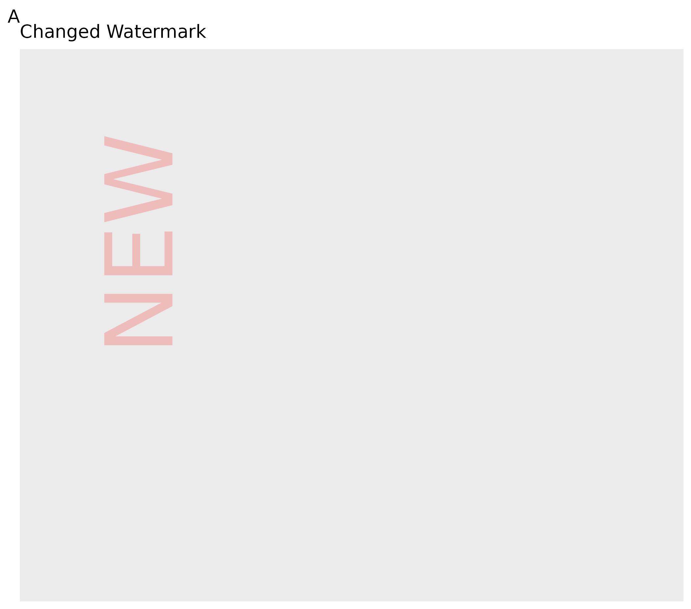
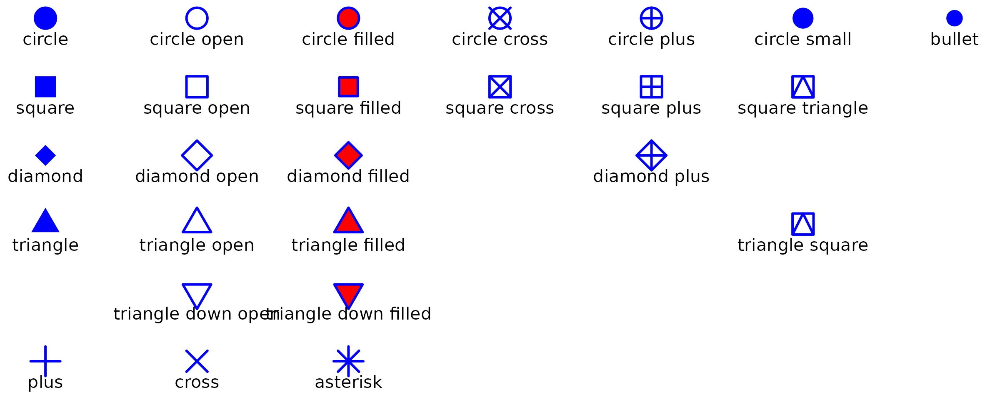
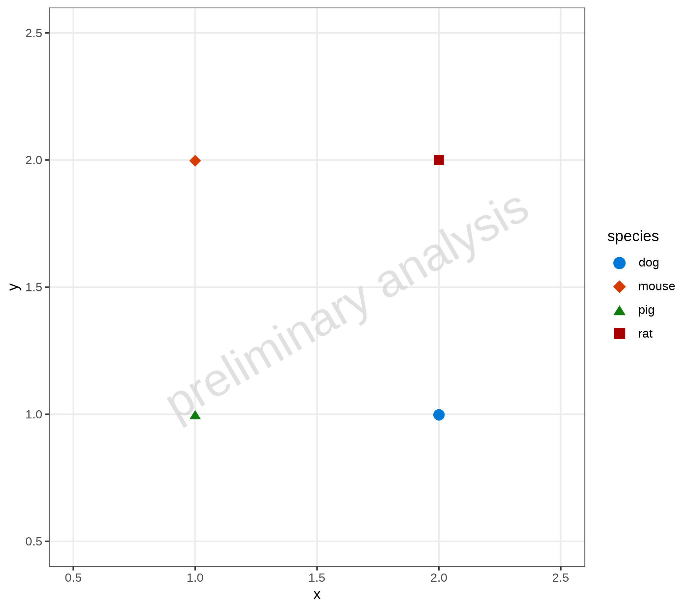

Overview
ospsuite_plots.Rmd#> Loading required package: ggplot21. Introduction
1.1 Objectives of ospsuite.plots
The main purpose of the ospsuite.plots library is to
provide standardized plots typically used in the context of PBPK
modeling. The library supports plot generation for the packages
OSPSuiteR and OSPSuite.ReportingEngine.
The library is based on ggplot2 functionality and also
utilizes the ggh4x package.
2. Default Settings for Layout
ospsuite.plots provides default settings for the layout,
including theme, geometric aesthetics, colors, and shapes for distinct
scales.
Examples within this vignette are plotted using the following test data:
testData <- exampleDataCovariates %>%
dplyr::filter(SetID == "DataSet1") %>%
dplyr::select(c("ID", "Age", "Obs", "Pred", "Sex"))
knitr::kable(head(testData), digits = 3)| ID | Age | Obs | Pred | Sex |
|---|---|---|---|---|
| 1 | 48 | 4.00 | 2.90 | Male |
| 2 | 36 | 4.40 | 5.75 | Male |
| 3 | 52 | 2.80 | 2.70 | Male |
| 4 | 47 | 3.75 | 3.05 | Male |
| 5 | 0 | 1.95 | 5.25 | Male |
| 6 | 48 | 2.45 | 5.30 | Male |
2.1 Plots with and without Default Layout
2.1.1 Default ggplot Layout
- A plot created using the
ospsuite.plotsfunction - B customized plot
# ospsuite.plots function
ospsuite.plots::plotHistogram(data = testData, mapping = aes(x = Age)) + labs(tag = "A")
# Customized plot
ggplot(data = testData, mapping = aes(x = Obs, y = Pred, color = Sex, shape = Sex)) +
geom_point() +
theme(legend.position = "top") +
labs(tag = "B")
2.1.2 Set ospsuite.plots Layout
To set the default layout, we use the same logic as in
ggplot2::theme_set(). The previous settings are returned
invisibly, so you can easily save them and restore them later.
setDefaults() sets the theme, discrete color palette,
shapes, and various options. All objects can also be set separately as
described below.
# Set default layout and save previous layout in variable oldDefaults
oldDefaults <- ospsuite.plots::setDefaults(defaultOptions = list(), colorMapList = NULL, shapeValues = NULL, pointAsUnicode = FALSE)
# ospsuite.plots function
ospsuite.plots::plotHistogram(data = testData, mapping = aes(x = Age)) + labs(tag = "A")
# Customized plot
ggplot(data = testData, mapping = aes(x = Obs, y = Pred, color = Sex, fill = Sex, shape = Sex)) +
geom_point() +
theme(legend.position = "top") +
labs(tag = "B")
2.1.3 Reset to Previously Saved Layout
# Reset to previously saved layout options
ospsuite.plots::resetDefaults(oldDefaults = oldDefaults)
# ospsuite.plots function
ospsuite.plots::plotHistogram(data = testData, mapping = aes(x = Age)) + labs(tag = "A")
# Customized plot
ggplot(data = testData, mapping = aes(x = Obs, y = Pred, color = Sex, shape = Sex)) +
geom_point() +
theme(legend.position = "top") +
labs(tag = "B")

2.2 Default Theme
Functions to set the ospsuite.plots default theme only
are setDefaultTheme() and resetDefaultTheme().
These functions are called by setDefaults() and
resetDefaults().
# Set ospsuite.plots Default Theme
oldTheme <- ospsuite.plots::setDefaultTheme()
# Customize theme using ggplot functionalities
theme_update(legend.position = "top")
theme_update(legend.title = element_blank())
# Reset to the previously saved theme
ospsuite.plots::resetDefaultTheme(oldTheme)2.3 Default Color
Functions to set the ospsuite.plots default color only
are setDefaultColorMapDistinct() and
resetDefaultColorMapDistinct(). These functions are called
by setDefaults() and resetDefaults().
Colors are set to discrete and ordinal scales for fill
and colour.
The package provides some color palettes in the object
colorMaps (see ?colorMaps).
The example below shows plots with:
- A plot with default settings for up to 6 different colors
- B plot with default settings for more than 6 different colors
- C customized settings for all following plots using the
colorMaps[["grays"]] - D customized plot: set gray scale for this plot only using function
scale_fill_grey() - E customized settings for all following plots using
ggsci::pal_lancet()(9) - F customized plots: set gray scale for this plot only using function
ggsci::scale_color_lancet()
# Set ospsuite.plots Default Color
oldColors <- ospsuite.plots::setDefaultColorMapDistinct()
ggplot() +
geom_tile(aes(x = rep(seq(1, 3), 2), y = rep(seq(1, 2), each = 3), fill = as.factor(seq(1, 6)))) +
labs(title = "Default settings for up to 6 different colors", tag = "A") +
theme(legend.position = "none", axis.title = element_blank())
ggplot() +
geom_tile(aes(x = c(rep(seq(1, 7), 7), 1, 2), y = c(rep(seq(1, 7), each = 7), 8, 8), fill = as.factor(seq(1, 51)))) +
labs(title = "Default settings for more than 6 different colors") +
theme(legend.position = "none", axis.title = element_blank())
# Customize colors: set to gray colors
ospsuite.plots::setDefaultColorMapDistinct(colorMaps[["grays"]])
ggplot() +
geom_tile(aes(x = rep(seq(1, 3), 3), y = rep(seq(1, 3), each = 3), fill = as.factor(seq(1, 9)))) +
theme(legend.position = "none", axis.title = element_blank()) +
labs(title = "colorMaps gray", tag = "C")
ggplot() +
geom_tile(aes(x = rep(seq(1, 3), 3), y = rep(seq(1, 3), each = 3), fill = as.factor(seq(1, 9)))) +
theme(legend.position = "none", axis.title = element_blank()) +
scale_fill_grey() +
labs(title = "scale_fill_grey", tag = "D")
# Set to color palettes inspired by plots in Lancet journals
ospsuite.plots::setDefaultColorMapDistinct(ggsci::pal_lancet()(9))
ggplot() +
geom_tile(aes(x = rep(seq(1, 3), 3), y = rep(seq(1, 3), each = 3), fill = as.factor(seq(1, 9)))) +
theme(legend.position = "none", axis.title = element_blank()) +
labs(title = "ggsci::pal_lancet", tag = "E")
# Set to color palettes inspired by plots in Lancet journals
ospsuite.plots::setDefaultColorMapDistinct(ggsci::pal_lancet()(9))
ggplot() +
geom_tile(aes(x = rep(seq(1, 3), 3), y = rep(seq(1, 3), each = 3), fill = as.factor(seq(1, 9)))) +
theme(legend.position = "none", axis.title = element_blank()) +
ggsci::scale_color_lancet() +
labs(title = "ggsci::scale_color_lancet", tag = "F")
Reset to Previously Saved Color Map
# Reset to the previously saved color map
ospsuite.plots::resetDefaultColorMapDistinct(oldColorMaps = oldColors)2.4 Default Shapes
Functions to set the ospsuite.plots default shapes only
are setDefaultShapeDistinct(shapeValues) and
resetDefaultShapeDistinct(oldShapeValue). These functions
are called by setDefaults() and
resetDefaults(). The scales are set to the option
ospsuite.plots.shapeValues, which is then used to set the
discrete scale of shapes for all ospsuite.plots functions.
For customized functions, add
scale_shape_manual(values = getOspsuite.plots.option(optionKey = OptionKeys$ospsuite.plots.shapeValues)).
2.5 Default Options
getDefaultOptions() returns a list of options used in
this package. These options are set by the function
setDefaults() via the variable
defaultOptions.
ospsuite.plots::setDefaults(defaultOptions = ospsuite.plots::getDefaultOptions())The names of all options defined by this package start with the
package name ospsuite.plots as a prefix and a suffix. The
suffixes are listed in the enumeration OptionKeys. There
are two helper functions (setOspsuite.plots.option and
getOspsuite.plots.option) to set and get these options.
2.5.1 Options to Customize Watermark
All plots in this packages are created with the function
ggplotWithWatermark() instead of ggplot().
This function creates a normal ggplot object only if
printed, a watermark is added.
Attention! If you combine plots e.g. with
cowplot:plot_grid the default print function without
watermark is called. In this case you have to add the watermark with the
function addwatermark(plotObject) before the print.
The watermark can by customized by this options:
- Switch the watermark on and off (option key =
watermark_enabled, default =TRUE) - Select the label (option key =
watermark_label, default = “preliminary analysis”) - Customize format (option key =
watermark_format, default =list(x = 0.5, y = 0.5, color = "grey20", angle = 30, fontsize = 12, alpha = 0.7))
Examples to Customize Watermark
- A: Change format of watermark
- B: Disable watermark
- C: Reset to default
# Change format and label of watermark
setOspsuite.plots.option(optionKey = OptionKeys$watermark_format, value = list(x = 0.2, y = 0.6, color = "red", angle = 90, fontsize = 24, alpha = 0.2))
setOspsuite.plots.option(optionKey = OptionKeys$watermark_label, value = "NEW")
# Initialize plot
ggplotWithWatermark() + labs(title = "Changed Watermark", tag = "A")
# Disable watermark
setOspsuite.plots.option(optionKey = OptionKeys$watermark_enabled, value = FALSE)
# Initialize plot
ggplotWithWatermark() + labs(title = "No Watermark", tag = "B")
# Reset to default
setOspsuite.plots.option(optionKey = OptionKeys$watermark_format, value = NULL)
setOspsuite.plots.option(optionKey = OptionKeys$watermark_label, value = NULL)
setOspsuite.plots.option(optionKey = OptionKeys$watermark_enabled, value = NULL)
# Initialize plot
ggplotWithWatermark() + labs(title = "Default Watermark", tag = "C")2.5.2 Options to Set the Defaults for Geom Layer Attributes
All plot functions have input variables geom*Attributes
which are passed as variables to the corresponding ggplot layer. The
defaults of the input variables can be set by options.
| functions | Line | Ribbon | Point | Errorbar | LLOQ | Hist | Boxplot | ComparisonLine | GuestLine |
|---|---|---|---|---|---|---|---|---|---|
| plotTimeProfile() | geomLineAttributes | geomRibbonAttributes | geomPointAttributes | geomErrorbarAttributes | geomLLOQAttributes | ||||
| plotResVsCov() | geomPointAttributes | geomErrorbarAttributes | geomLLOQAttributes | geomComparisonLineAttributes | geomGuestLineAttributes | ||||
| plotRatioVsCov() | geomPointAttributes | geomErrorbarAttributes | geomLLOQAttributes | geomComparisonLineAttributes | geomGuestLineAttributes | ||||
| plotPredVsObs() | geomPointAttributes | geomErrorbarAttributes | geomLLOQAttributes | geomComparisonLineAttributes | geomGuestLineAttributes | ||||
| plotHistogram() | geomHistAttributes | ||||||||
| plotBoxWhisker() | geomBoxplotAttributes, geomPointAttributes |
With default options:
LineAttributes = list()Ribbon = list(color = NA)PointAttributes = list()ErrorbarAttributes = list(width = 0)LLOQAttributes = list()ComparisonLineAttributes = list(linetype = "dashed")GuestLineAttributes = list(linetype = "dashed")BoxplotAttributes = list(position = position_dodge(width = 1), color = "black")HistAttributes = list(bins = 10, position = ggplot2::position_nudge())
2.5.3 Options to Set Defaults for Aesthetics
Options to set the face alpha of ribbons filled points and options to set the filled points for values below and above LLOQ.
# Default alpha = 0.5
getOspsuite.plots.option(optionKey = "Alpha")
# Alpha of LLOQ values
c("TRUE" = 0.3, "FALSE" = 1)
getOspsuite.plots.option(optionKey = "LLOQAlphaVector")
# Linetype LLOQ comparison lines
"dashed"
getOspsuite.plots.option(optionKey = "LLOQLineType")2.5.4 Options to Define Export Format
There are options to define the export format using the function
exportPlot (see details below):
-
export.width: Width of the exported file -
export.units: Units for width and height -
export.device: Device for plot export -
export.dpi: Plot resolution
The latter options are used directly as input for
ggplot2::ggsave, so check the help for available
values.
3. Plot Functions
All plot functions listed below call internally the function
initializePlot(). This function constructs labels from the
metadata and adds a watermark layer. It can also be used to create a
customized ggplot.
4. Additional Aesthetics
This package provides some additional aesthetics.
For more details, see the examples within the vignettes for the respective functions.
-
groupby: Shortcut to use different aesthetics to group. All functions where this aesthetic is used have also a variablegroupAesthetics. The mappinggroupbyis copied to all aesthetics listed within this variable and to the aestheticgroup. -
lloq: Mapped to a column with values indicating the lower limit of quantification, adds horizontal (or vertical) lines to the plot. All observed values below the “lloq” are plotted with a lighter alpha. As values are compared row by row, it is possible to have more than one LLOQ. -
error: Mapped to a column with additive error (e.g., standard deviation); error bars are plotted. This is a shortcut to mapyminandymaxdirectly (ymin = y - errorandymax = y + error). Additionally, ifyscaleis set,yminvalues below 0 are set toy. -
error_relative: Mapped to a column with relative error (e.g., geometric standard deviation); error bars are plotted. This is a shortcut to mapyminandymaxdirectly (ymin = y / error_relativeandymax = y * error_relative). -
y2axis: Creates a plot with 2 y axes. It is used to map to a column with a logical value. Values where this column has a TRUE entry will be displayed with a secondary axis. -
mdv: Mapped to a logical column. Rows where this column has entries set to TRUE are not plotted (MDV = missing data value, taken from NONMEM notation). -
observed/predicted: For the functionplotPredVsObs(),observedis mapped toxandpredictedis mapped toy. For all other functions, residuals are calculated if both aesthetics are mapped. The variableresidualScaledefines the calculation method:-
residualScale = "log": , -
residualScale = "linear": , -
residualScale = "ratio": .
-
See
vignette("Goodness of Fit", package = "ospsuite.plots") for
examples.
| functions | groupby |
lloq |
error |
error_relative |
y2axis |
mdv |
observed / predicted
|
|---|---|---|---|---|---|---|---|
| plotTimeProfile() | X | X | X | X | X | X | |
| plotHistogram() | X | X | X | ||||
| plotPredVsObs() | X | X | X | X | X | X | |
| plotResVsCov() | X | X | X | X | X | ||
| plotRatioVsCov() | X | X | X | X | X | ||
| plotQQ() | X | X | X | ||||
| plotBoxWhisker() | X | X |
5. Plot Export
This section demonstrates how to use the exportPlot
function to save ggplot objects to files, adjusting the
width and height of the exported plots as necessary. This function is
part of the ospsuite.plots package and simplifies the
process of exporting plots for various purposes, such as publication or
presentation.
5.1 Basic Usage
To export a plot, you need a ggplot object. Here’s a basic example:
Create a simple ggplot object:
plotObject <- ospsuite.plots::plotHistogram(data = testData, mapping = aes(x = Age))Exporting the Plot: Using the exportPlot function, you
can easily save this plot to a file:
Replace “path/to/save” with the actual directory path where you want to save the plot, and adjust the width and height parameters as needed.
exportPlot(plotObject = plotObject, filepath = "path/to/save", filename = "myplot", width = 10, height = 8)5.2 Advanced Usage
Adjusting Plot Dimensions Based on Content
The exportPlot function can automatically adjust the
plot dimensions based on its content, such as the presence of a legend
or the aspect ratio.
Assuming plotObject is your ggplot object:
exportPlot(plotObject = plotObject, filepath = "path/to/save", filename = "adjusted_plot.png")In this case, you don’t need to specify the width and height
explicitly; the function calculates them for you. The default width
value saved in the ospsuite.plots option
export.width is used. If an aspect ratio is defined in the
theme of the plot, height will be adjusted accordingly; otherwise, the
function exports square figures.
6. Shapes
6.1 Default Shapes
shapeNames <- c("circle", paste("circle", c("open", "filled", "cross", "plus", "small")), "bullet", "square", paste("square", c("open", "filled", "cross", "plus", "triangle")), "diamond", paste("diamond", c("open", "filled", "plus")), "triangle", paste("triangle", c("open", "filled", "square")), paste("triangle down", c("open", "filled")), "plus", "cross", "asterisk")
shapes <- data.frame(shapeNames = shapeNames, x = c(1:7, 1:6, 1:3, 5, 1:3, 6, 2:3, 1:3), y = -rep(1:6, c(7, 6, 4, 4, 2, 3)))
ggplot(shapes, aes(x, y)) +
geom_point(aes(shape = shapeNames), color = "blue", fill = "red", size = 5, stroke = 1) +
geom_text(aes(label = shapeNames), nudge_y = -0.3, size = 3.5) +
scale_shape_identity() +
theme_void()
6.2 Use Unicode Symbols with {showtext}
Attention: The use of showtext has side effects - a
customized geom_Point function
geomPointUnicode has to be used.
shapes <- data.frame(shapeNames = names(Shapes), shape_symbols = unlist(unname(Shapes)), x = rep(c(1:5), 8), y = rep(-c(1:8), each = 5))
showtext::showtext_auto()
ggplot(shapes, aes(x, y)) +
geomPointUnicode(aes(shape = shape_symbols), color = "blue", fill = "red", size = 5) +
geom_text(aes(label = shapeNames), nudge_y = -0.3, size = 3.5) +
scale_shape_identity() +
theme_void()
showtext::showtext_auto(enable = "off")
6.3 Switch Between Modes
To switch to the Unicode mode, call setDefaults with the
input variable pointAsUnicode = TRUE. To switch back, use
setDefaults(pointAsUnicode = FALSE) or
resetDefaults(oldDefaults). However, it is recommended to
produce all plots of one workflow either with Unicode mode or without.
Otherwise, the plots may have different fonts.
oldDefaults <- ospsuite.plots::setDefaults(pointAsUnicode = TRUE)
dt <- data.frame(x = c(1, 2, 1, 2), y = c(1, 1, 2, 2), species = c("pig", "dog", "mouse", "rat"))
plotObject <- plotYVsX(data = dt, mapping = aes(x = x, y = y, groupby = species), xscale = "linear", xscale.args = list(limits = c(0.5, 2.5)), yscale = "linear", yscale.args = list(limits = c(0.5, 2.5)))
plot(plotObject)
Use Non-Default Icons
plot(plotObject +
scale_shape_manual(values = c(pig = "pig", dog = "dog", mouse = "mouse", rat = "rat")))```